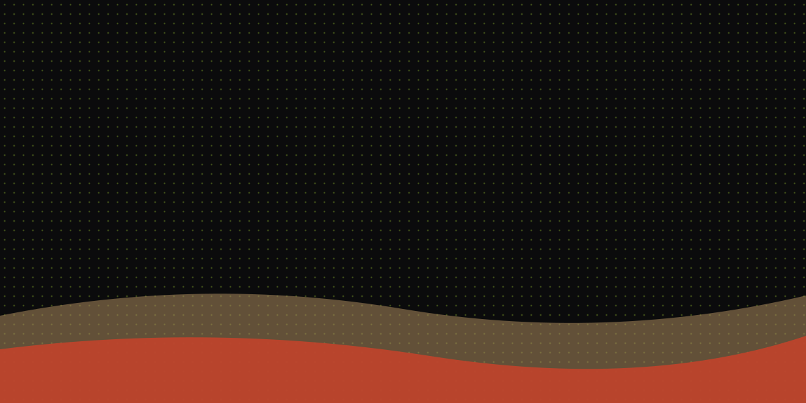

21 · 22 · 23 DE DEZEMBRO — CAMPUS UNASP, XIQUE-XIQUE (BA)
TRAP IN UNASP
Três noites às margens do Rio São Francisco. O trap que toca em toda Bahia desce pro sertão com o line-up mais pesado que Xique-Xique já viu.
📍 Campus Unasp — Xique-Xique, Bahia
As três atrações principais
não fica de foraMATUÊ
Abre o festival de virada pro sertão baiano. Show único, feito pra fechar o ano gritando.
TETO
Headliner da segunda noite. Beat pesado, palco pequeno, plateia colada.
WIU
Encerra o TRAP IN UNASP às margens do Rio São Francisco, virando a última madrugada do festival.
O trap que desceu pro rio
Xique-Xique nunca teve um festival assim. O TRAP IN UNASP tira o trap da tela do celular e coloca ele no meio do sertão, de frente pro Rio São Francisco — poeira, calor de dezembro e o grave mais forte que já passou pela cidade.
Três dias, um palco só, artista perto de plateia. Sem VIP escondido atrás de tapume: quem paga o ingresso vê o show de verdade.
- Onde
- Campus Unasp, Xique-Xique — BA
- Quando
- 21, 22 e 23 de dezembro de 2026 — a partir das 19h
- Line-up
- Matuê, Teto, Wiu, Brandao85, Yunk Vino, Alee, Veigh e Pastick e Cunha